What's More About My Interests?
Formula One
Have you ever seen a sport that moves all around the globe, with 24 high-octane races in just one year? Welcome to Formula 1, the ultimate motorsport spectacle where speed, technology, and human skill collide. Since its inception in 1950, F1 has showcased the fastest single-seater race cars, piloted by the most elite drivers on the planet, all competing for glory on some of the world's most thrilling circuits. Imagine the adrenaline rush as cars fly through the narrow streets of the Monaco Grand Prix, or roar down the straights of Italy's Monza Circuit, aptly known as the “Temple of Speed.” Feel the intensity of Silverstone in the UK, where it all began, or the rollercoaster ride of Belgium's Spa-Francorchamps with its legendary Eau Rouge corner. From the dazzling night lights of Yas Marina in Abu Dhabi to the heart-pounding curves of Japan's Suzuka Circuit, each race offers a unique challenge and a feast for the senses. F1 is not just a race; it's a world tour of speed, innovation, and drama that keeps fans on the edge of their seats. Buckle up and experience the thrill — because in Formula 1, every second counts!
.jpg)
Billie Eilish
Billie Eilish, born in 2001, took the music world by storm with her unique sound and aesthetic. Known for her ethereal voice, dark themes, and genre-blending style, she skyrocketed to fame with her 2019 album When We All Fall Asleep, Where Do We Go?, featuring hits like “bad guy” and “bury a friend.” Eilish's fashion sense and candid lyrics about mental health resonate deeply with her fans. She made history by sweeping the major categories at the 2020 Grammys and continues to innovate, pushing the boundaries of pop with her introspective and hauntingly beautiful tracks.

Kanye West
Kanye West is one of the most influential and controversial figures in modern music. Emerging in the early 2000s as a producer and rapper, Kanye redefined hip-hop with groundbreaking albums like The College Dropout, My Beautiful Dark Twisted Fantasy, and Yeezus. Known for his genre-bending production, thought-provoking lyrics, and larger-than-life personality, Kanye has consistently reinvented his sound. Beyond music, he's made waves in the fashion world with his Yeezy brand. Despite his polarizing persona, Kanye's impact on music and culture is undeniable.
Ariana Grande
Ariana Grande is the reigning queen of pop with powerhouse vocals and a catalog of chart-topping hits. Rising to fame as an actress on Nickelodeon, she transitioned seamlessly into music with her debut album Yours Truly in 2013. Known for songs like “Problem,” “Thank U, Next,” and “7 Rings,” Ariana combines catchy hooks, personal lyrics, and R&B influences. Her iconic high ponytail and vocal range reminiscent of Mariah Carey have made her a global superstar. Grande's ability to channel personal challenges into empowering music has earned her legions of devoted fans.
Tyler, The Creator
Tyler, The Creator burst onto the scene with the controversial, raw energy of his early music and the Odd Future collective. Over the years, he has evolved into one of the most creative minds in hip-hop. Albums like Flower Boy, IGOR, and Call Me If You Get Lost showcase his growth, blending jazz, rap, and funk with introspective and sometimes surreal themes. Known for his vibrant production and eccentric style, Tyler has carved out a unique space in music, fashion, and even festival culture with his Camp Flog Gnaw event. His bold artistic vision continues to push boundaries.

Portfolio
Check out some of my projects:
| Project | Description | Link |
|---|---|---|
| Activity 1 | COURAGE.HTML | View Project |
| Activity 2 | HAPPINESS.HTML | View Project |
| Activity 3 | FORMATTINGTEXT(BREAKTAGS).HTML | View Project |
| Activity 4 | FORMATTINGTEXT_TOMAGOS.HTML | View Project |
| Activity 5 | ALIGNMENT.HTML | View Project |
| Activity 6 | Image&Marquee.html | View Project |
Contact Information
Feel free to get in touch with me:
- Email: mikaizumi478@gmail.com
- Twitter or X: Kris 🏎
- Tiktok: Kris 🏎🇵🇭
- Whatsapp and Phone Number: 09272261659
Embedded Frames
Here are four sample frames from past activities:
Gallery of Gifs
Here are some Gifs representing my interests:
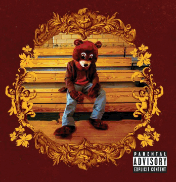 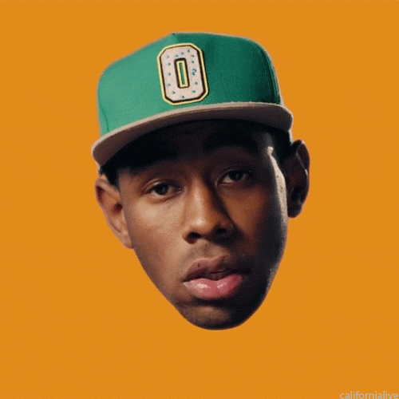
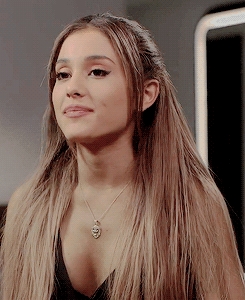
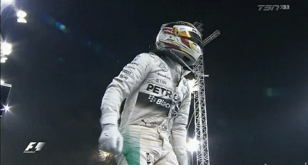
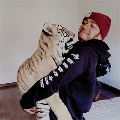
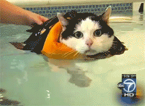
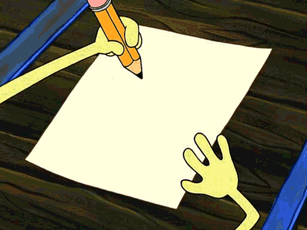
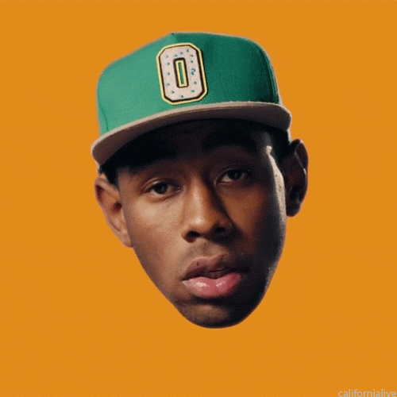
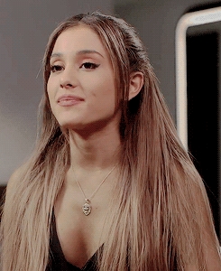
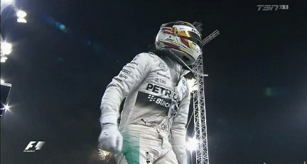
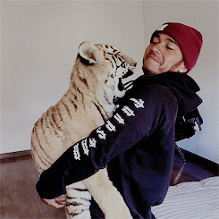
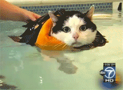
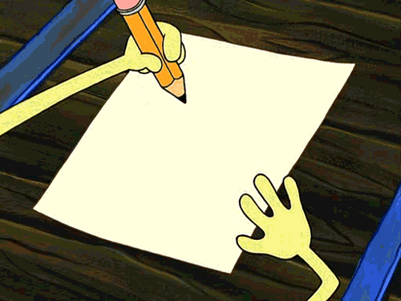